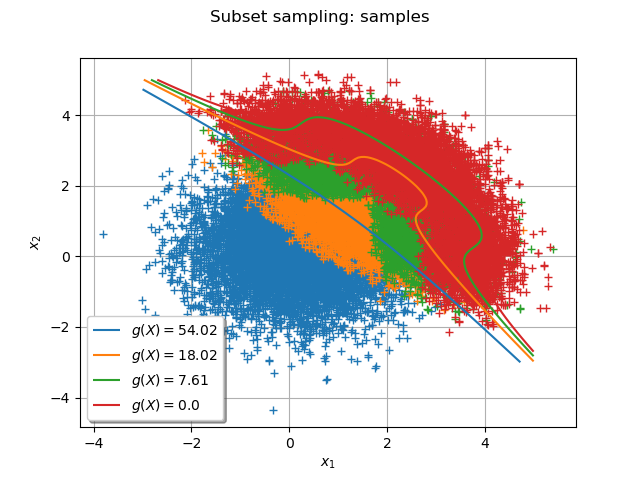
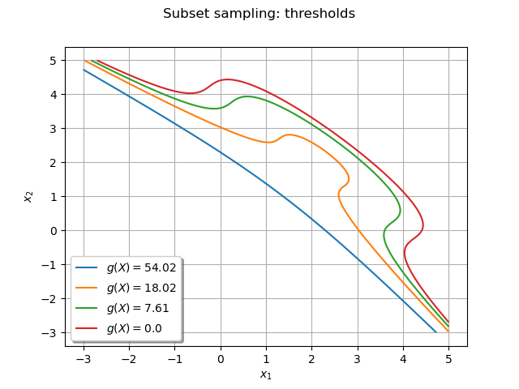
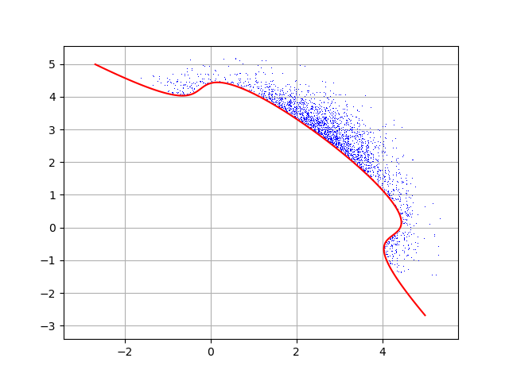

Note
Go to the end to download the full example code
Subset Sampling¶
The objective is to evaluate a probability from the Subset sampling technique.
We consider the function  defined by:
defined by:
![\begin{align*}
g(X)= 20-(x_1-x_2)^2-8(x_1+x_2-4)^3
\end{align*}]()
and the input random vector  which follows a Normal distribution with independent components, and identical marginals with 0.25 mean and unit variance:
which follows a Normal distribution with independent components, and identical marginals with 0.25 mean and unit variance:
![\begin{align*}
X \sim \mathcal{N}(\mu = [0.25, 0.25], \sigma = [1,1], cov = I_2)
\end{align*}]()
We want to evaluate the probability:

First, import the python modules:
import openturns as ot
from openturns.viewer import View
Create the probabilistic model  ¶
¶
Create the input random vector  :
:
X = ot.RandomVector(ot.Normal([0.25] * 2, [1] * 2, ot.IdentityMatrix(2)))
Create the function  :
:
g = ot.SymbolicFunction(["x1", "x2"], ["20-(x1-x2)^2-8*(x1+x2-4)^3"])
print("function g: ", g)
function g: [x1,x2]->[20-(x1-x2)^2-8*(x1+x2-4)^3]
In order to be able to get the subset samples used in the algorithm, it is necessary to transform the SymbolicFunction into a MemoizeFunction:
g = ot.MemoizeFunction(g)
Create the output random vector :
Y = ot.CompositeRandomVector(g, X)
Create the event  ¶
¶
myEvent = ot.ThresholdEvent(Y, ot.LessOrEqual(), 0.0)
Evaluate the probability with the subset sampling technique¶
algo = ot.SubsetSampling(myEvent)
In order to get all the inputs and outputs that realize the event, you have to mention it now:
algo.setKeepEventSample(True)
Now you can run the algorithm!
algo.run()
result = algo.getResult()
proba = result.getProbabilityEstimate()
print("Proba Subset = ", proba)
print("Current coefficient of variation = ", result.getCoefficientOfVariation())
Proba Subset = 0.00040940000000000025
Current coefficient of variation = 0.08584233339124359
The length of the confidence interval of level  is:
is:
length95 = result.getConfidenceLength()
print("Confidence length (0.95) = ", result.getConfidenceLength())
Confidence length (0.95) = 0.00013776136561433357
which enables to build the confidence interval:
print(
"Confidence interval (0.95) = [",
proba - length95 / 2,
", ",
proba + length95 / 2,
"]",
)
Confidence interval (0.95) = [ 0.0003405193171928335 , 0.000478280682807167 ]
You can also get the successive thresholds used by the algorithm:
levels = algo.getThresholdPerStep()
print("Levels of g = ", levels)
Levels of g = [54.0207,18.0184,7.60975,0]
Draw the subset samples used by the algorithm¶
The following manipulations are possible onfly if you have created a MemoizeFunction that enables to store all the inputs and output of the function .
Get all the inputs where were evaluated:
inputSampleSubset = g.getInputHistory()
nTotal = inputSampleSubset.getSize()
print("Number of evaluations of g = ", nTotal)
Number of evaluations of g = 40000
Within each step of the algorithm, a sample of size  is created, where:
is created, where:
N = algo.getMaximumOuterSampling() * algo.getBlockSize()
print("Size of each subset = ", N)
Size of each subset = 10000
You can get the number  of steps with:
of steps with:
Ns = algo.getStepsNumber()
print("Number of steps= ", Ns)
Number of steps= 4
and you can verify that is equal to  :
:
print("nTotal / N = ", int(nTotal / N))
nTotal / N = 4
Now, we can split the initial sample into subset samples of size :
list_subSamples = list()
for i in range(Ns):
list_subSamples.append(inputSampleSubset[i * N: i * N + N])
The following graph draws each subset sample and the frontier  where
where  is the threshold at the step
is the threshold at the step  :
:
graph = ot.Graph()
graph.setAxes(True)
graph.setGrid(True)
graph.setTitle("Subset sampling: samples")
graph.setXTitle(r"$x_1$")
graph.setYTitle(r"$x_2$")
graph.setLegendPosition("bottomleft")
Add all the subset samples:
for i in range(Ns):
cloud = ot.Cloud(list_subSamples[i])
# cloud.setPointStyle("dot")
graph.add(cloud)
col = ot.Drawable().BuildDefaultPalette(Ns)
graph.setColors(col)
Add the frontiers where is the threshold at the step :
gIsoLines = g.draw([-3] * 2, [5] * 2, [128] * 2)
dr = gIsoLines.getDrawable(0)
for i in range(levels.getSize()):
dr.setLevels([levels[i]])
dr.setLineStyle("solid")
dr.setLegend(r"$g(X) = $" + str(round(levels[i], 2)))
dr.setLineWidth(3)
dr.setColor(col[i])
graph.add(dr)
_ = View(graph)

Draw the frontiers only¶
The following graph enables to understand the progresison of the algorithm:
graph = ot.Graph()
graph.setAxes(True)
graph.setGrid(True)
dr = gIsoLines.getDrawable(0)
for i in range(levels.getSize()):
dr.setLevels([levels[i]])
dr.setLineStyle("solid")
dr.setLegend(r"$g(X) = $" + str(round(levels[i], 2)))
dr.setLineWidth(3)
graph.add(dr)
graph.setColors(col)
graph.setLegendPosition("bottomleft")
graph.setTitle("Subset sampling: thresholds")
graph.setXTitle(r"$x_1$")
graph.setYTitle(r"$x_2$")
_ = View(graph)

Get all the input and output points that realized the event¶
The following lines are possible only if you have mentioned that you wanted to keep the points that realize the event with the method algo.setKeepEventSample(True)
inputEventSample = algo.getEventInputSample()
outputEventSample = algo.getEventOutputSample()
print("Number of event realizations = ", inputEventSample.getSize())
Number of event realizations = 4094
Draw them! They are all in the event space.
graph = ot.Graph()
graph.setAxes(True)
graph.setGrid(True)
cloud = ot.Cloud(inputEventSample)
cloud.setPointStyle("dot")
graph.add(cloud)
gIsoLines = g.draw([-3] * 2, [5] * 2, [1000] * 2)
dr = gIsoLines.getDrawable(0)
dr.setLevels([0.0])
dr.setColor("red")
graph.add(dr)
_ = View(graph)
